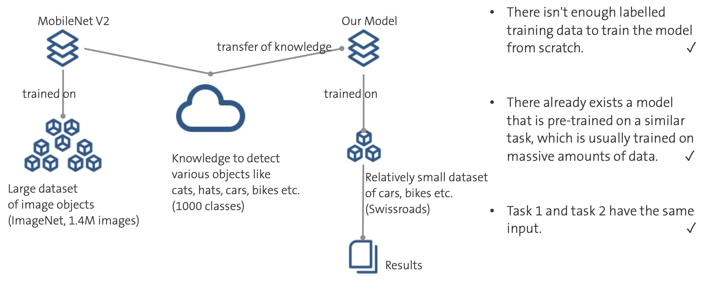
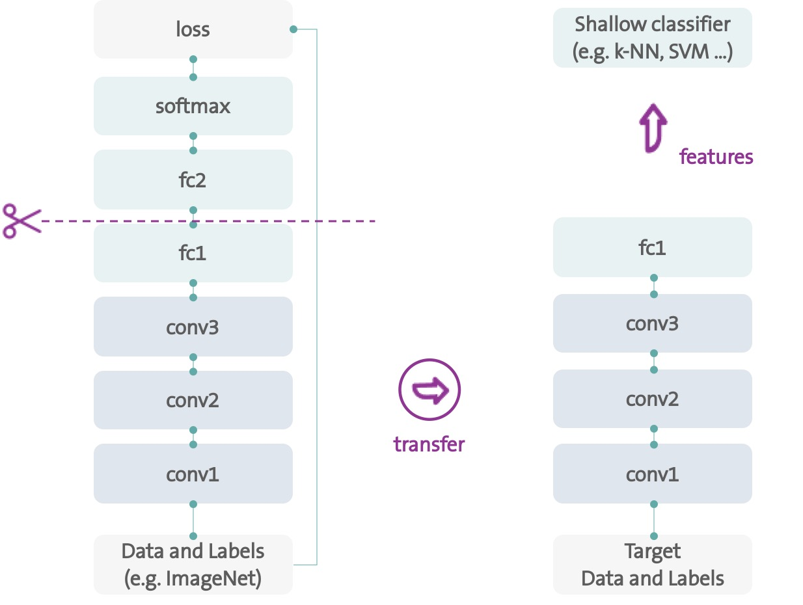
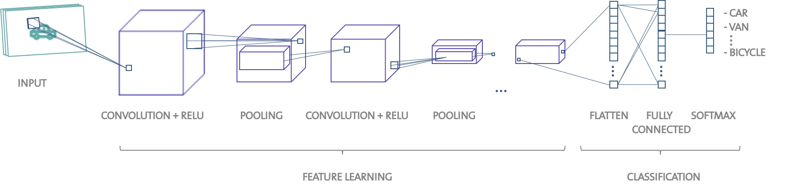

This project as part of "Applied Data Science: Machine Learning" Program at the EPFL Extension School. I wasn't very happy with the results I got then, so after some more research and the experience of other projects, I decided to revisit it.
One of the projects in the program was to build an image classifier using the Swissroads data
set which contains a couple of hundreds of images of vehicles found in the EPFL
- Lausanne area categorized as cars, trucks, vans, bikes, motorcycles and
others (280 training samples, 140 validation samples). The explicit goals for this
project were one: to test and compare traditional ML classifiers, using transfer learning to get around the problem of very very little data and two: to build a convolutional neural network from scratch trained on the raw pixels ( of the 280 samples). The choice of the machine learning models was given: logistic
regression, decision trees, random forests, support vector machines and
k-nearest neighbors plus convolutional neural networks.
So, for the next part, I will briefly present one of these algorithms and then go a bit deeper into the more challenging part of training the conv net. We only have 280 training samples, and we know that machine learning models typically require a lot of data to perform well. What if we could do more than just get more data? What if we could use the knowledge of another model trained on more data to help us with our problem? This is the idea behind transfer learning.MobileNet V2 developed at Google is one such example of pre-trained models. MobileNet V2 was trained on the ImageNet dataset, a large dataset with a wide variety of categories including different vehicle types, consisting of 1.4 M images and 1000 classes.
As is always the case in machine learning, it is hard to form rules that are generally applicable, but here are some guidelines on when transfer learning might be used: (1) There isn't enough labeled training data to train your network from scratch. (2) There already exists a network that is pre-trained on a similar task, which is usually trained on massive amounts of data. (3) Task 1 and task 2 have the same input.
How does transfer learning work exactly? There are many approaches to transfer learning (and a lot of good articles out there), but the approach I’ve used here is to use deep learning to discover the best representation of our problem, which means finding the most important features. This approach is mostly used in computer vision because it decreases computation time and makes it more suitable for traditional algorithms, as well. Deep learning models are layered architectures that learn different features at different layers. These layers are then finally connected to a last layer (usually a fully connected layer, in the case of supervised learning) to get the final output. This layered architecture allows us to utilize a pre-trained network without its final layer as a fixed feature extractor for other tasks.
Deep learning models are layered architectures that learn different features at different layers. These layers are then finally connected to a last layer (usually a fully connected layer, in the case of supervised learning) to get the final output. This layered architecture allows us to utilize a pre-trained network without its final layer as a fixed feature extractor for other tasks. This is one of the most widely utilized methods of performing transfer learning using deep neural networks.

This way we not need to (re)train the entire model. The base convolutional network already contains features that are generically useful for classifying pictures. However, the final, classification part of the pretrained model is specific to the original classification task, and subsequently specific to the set of classes on which the model was trained.
I was most excited about the convolutional neural networks part. The challenging part of using convolutional neural networks in practice is how to design model architectures because there is no recipe on the number of layers to be used, so this is a trial-and-error process. But there is no need to start greenfield either and we can always get an idea of where to start by studying successful applications. Perhaps the first widely known and successful application of convolutional neural networks was LeNet-5, first published by Yann LeCun in 1998. It is a long paper, but his architecture proposes a pattern of a convolutional and pooling layers, repeated two and a half times before the output feature maps are flattened and fed to the fully connected layers for the final prediction. Throughout the years the model architectures have evolved going deeper and more complex, but some architecture best practices remain:
The architecture that I chose build upon these best practices with the following modifications:

My original trial using this architecture achieved an accuracy of 0.520. Not bad compared to the dummy-classifier, but pretty dissapointing compared to the other results. Obviously, in was an unfair comparison, since the classical machine learning classifiers took advantage of the features extracted using transfer learning, whereas the convolutional neural networks had to learn the features from the 280 samples.
Check the convolutional neural networks in the second part of this article.
- Architecture of LeNet-5 (Yann LeCun) (http://vision.stanford.edu/cs598_spring07/papers/Lecun98.pdf)
- Transfer Learning
- Mobile Net (https://ai.googleblog.com/2017/06/mobilenets-open-source-models-for.html)
created with
Static Site Generator .